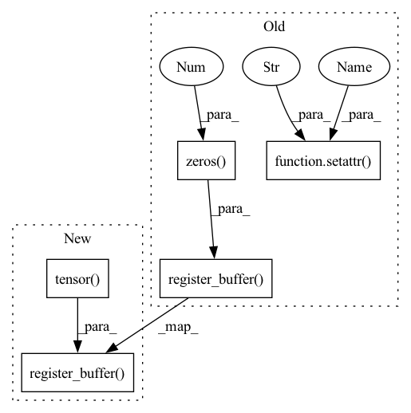

Pattern ID :36044

Before Change
module.register_buffer("idxs", idxs.to(module.weight.device))
// module.register_buffer("select_idxs", select_idxs.to(module.weight.device))
module.register_parameter("bf", torch.nn.Parameter(bias))
module.register_buffer("zeros", torch.zeros(1, 1, *shape[2:], dtype=bias.dtype, device=module.weight.device))
setattr(module, "zero_cache", module.zeros)
setattr(module, "idxs_cache", module.idxs)
return module
After Change
current += 1
else:
select_idxs.append(module.weight.shape[0])
select_idxs = torch.tensor(select_idxs)
module.register_buffer("idxs", idxs.to(module.weight.device))
module.register_buffer("select_idxs", select_idxs.to(module.weight.device))
module.register_parameter("bf", torch.nn.Parameter(bias))
// module.register_buffer("zeros", torch.zeros(1, 1, *shape[2:], dtype=bias.dtype, device=module.weight.device))
// setattr(module, "zero_cache", module.zeros)
In pattern: SUPERPATTERN
Frequency: 3
Non-data size: 5
Instances
Fragment ID: 102338697
Project Name: eidoslab/simplify
Commit Name: 20f2d560394960f91d131408660f14299acf9c1d
Time: 2021-07-08
Author: carlo.alberto.barbano@outlook.com
File Name: simplify/layers.py
M Class Name: BatchNormExpand
N Class Name: BatchNormExpand
M Method Name: from_bn(4)
N Method Name: from_bn(4)
M Parent Class: nn.BatchNorm2d
N Parent Class: nn.BatchNorm2d
M File Name: simplify/layers.py
N File Name: simplify/layers.py
M Start Line: 99
M End Line: 101
N Start Line: 87
N End Line: 98
'>
Before Change
@staticmethod
def from_bn(module: nn.BatchNorm2d, idxs, bias, shape):
module.__class__ = BatchNormExpand
setattr(module, "idxs", idxs)
module.register_parameter("bf", torch.nn.Parameter(bias))
module.register_buffer("zeros", torch.zeros(1, 1, *shape[2:]))
return module
def forward(self, x):
After Change
def from_bn(module: nn.BatchNorm2d, idxs, bias, shape):
module.__class__ = BatchNormExpand
module.register_buffer(
"idxs", torch.tensor(
idxs, device=module.weight.device))
module.register_parameter("bf", torch.nn.Parameter(bias))
return module
'>
Fragment ID: 102338696
Project Name: eidoslab/simplify
Commit Name: be5a28c44222e73518d39c7af81f54e6bfbe9453
Time: 2021-07-02
Author: carlo.alberto.barbano@outlook.com
File Name: simplify/layers.py
M Class Name: BatchNormExpand
N Class Name: BatchNormExpand
M Method Name: from_bn(4)
N Method Name: from_bn(4)
M Parent Class: nn.BatchNorm2d
N Parent Class: nn.BatchNorm2d
M File Name: simplify/layers.py
N File Name: simplify/layers.py
M Start Line: 60
M End Line: 63
N Start Line: 57
N End Line: 59
'>
Before Change
module.register_buffer("idxs", idxs.to(module.weight.device))
// module.register_buffer("select_idxs", select_idxs.to(module.weight.device))
module.register_parameter("bf", torch.nn.Parameter(bias))
module.register_buffer("zeros", torch.zeros(1, *bias.shape, dtype=bias.dtype, device=module.weight.device))
setattr(module, "use_bf", bias.abs().sum() != 0)
setattr(module, "zero_cache", module.zeros)
setattr(module, "idxs_cache", module.idxs)
return module
After Change
current += 1
else:
select_idxs.append(module.weight.shape[0])
select_idxs = torch.tensor(select_idxs)
module.register_buffer("idxs", idxs.to(module.weight.device))
module.register_buffer("select_idxs", select_idxs.to(module.weight.device))
module.register_parameter("bf", torch.nn.Parameter(bias))
setattr(module, "use_bf", bias.abs().sum() != 0)
'>
Fragment ID: 102338699
Project Name: eidoslab/simplify
Commit Name: 20f2d560394960f91d131408660f14299acf9c1d
Time: 2021-07-08
Author: carlo.alberto.barbano@outlook.com
File Name: simplify/layers.py
M Class Name: ConvExpand
N Class Name: ConvExpand
M Method Name: from_conv(3)
N Method Name: from_conv(3)
M Parent Class: nn.Conv2d
N Parent Class: nn.Conv2d
M File Name: simplify/layers.py
N File Name: simplify/layers.py
M Start Line: 39
M End Line: 43
N Start Line: 26
N End Line: 37